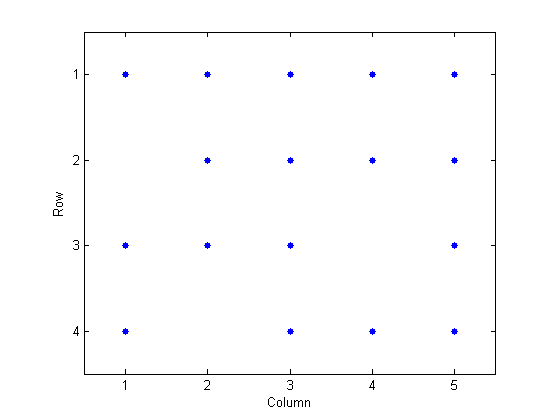
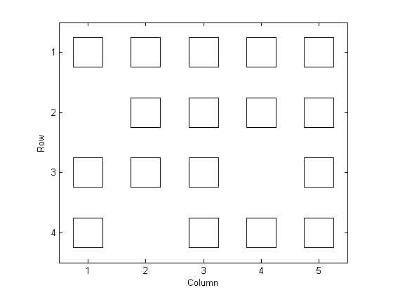
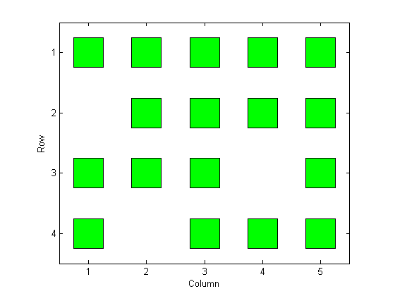
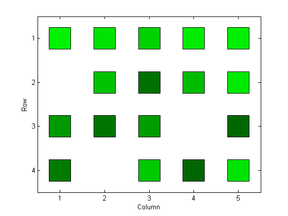
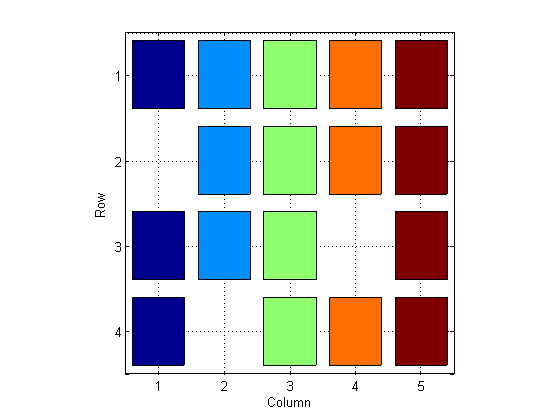

SPYDEMO
Contents
Purpose
help spy
SPY Visualize sparsity pattern.
SPY(S) plots the sparsity pattern of the matrix S.
SPY(S,'LineSpec') uses the color and marker from the line
specification string 'LineSpec' (See PLOT for possibilities).
SPY(S,markersize) uses the specified marker size instead of
a size which depends upon the figure size and the matrix order.
SPY(S,'LineSpec',markersize) sets both.
SPY(S,markersize,'LineSpec') also works.
Reference page in Help browser
doc spy
We consider several ways to 'prettify' spy output, all using colored squares to denote elements of S.
Input matrix
n = 4; k = 5; S = rand(n,k); S(S < .3) = 0
S =
0.95 0.89 0.82 0.92 0.94
0 0.76 0.44 0.74 0.92
0.61 0.46 0.62 0 0.41
0.49 0 0.79 0.41 0.89
Formatting
xlim = [.5 k+.5]; ylim = [.5 n+.5]; touchup = ['set(gca,''XTick'',1:k,''YTick'',1:k,''XLim'',xlim,''YLim'',ylim), ' ... 'xlabel(''Column''), ' ... 'ylabel(''Row''), ' ... 'set(gcf,''Color'',''w'')']
touchup =
set(gca,'XTick',1:k,'YTick',1:k,'XLim',xlim,'YLim',ylim), xlabel('Column'), ylabel('Row'), set(gcf,'Color','w')
SPY with no customization
figure spy(S) eval(touchup)

SPY with 'square' marker
figure
spy(S,'ks',40)
eval(touchup)

SPY with 'square' marker and fill
figure spy(S,'ks',40) set(get(gca,'Children'),'MarkerFaceColor','g') eval(touchup)

PLOT with 'square' marker
- Returns handles of individual squares, whose color, size or line style can be used to communicate additional information, as below. With spy, all symbols have to be the same
figure h = nan*S; for i = 1:n for j = 1:k if S(i,j) ~= 0 e = 'k'; f = S(i,j)*[0 1 0]; else e = 'w'; f = 'w'; end h(i,j) = plot(j,i,'s','MarkerEdgeColor',e,'MarkerFaceColor',f,'MarkerSize',40); hold on end end set(gca,'YDir','reverse') eval(touchup)

BAR3: a view from above
- Works if S values are non-negative. z-axis minimum must be set above zero, but below the smallest non-zero element - below, we choose 10^(-6)
- Automatically sizes squares
- Places squares more compactly than spy or plot
- Color-codes columns. (This may be undesirable, and difficult to change - see below)
- Returns handles to created surface objects, allowing one to modify squares' appearance - however, not as easily as with plot
figure h = bar3(S,.8); a = gca; set(a,'CameraPosition',[mean(xlim) mean(ylim) 4],... 'CameraUpVector',[0 -1 5], ... 'Box','on', ... 'YDir','reverse', ... 'ZLim',[1e-6 1]) eval(touchup)
